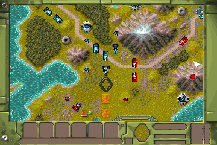

名稱：狂島浴血2／戰島2 (Battle Isle 2／Battle Isle 2200，英文版)
簡介：Blue Byte 1994年出品的回合制策略遊戲，由Accolade代理發行，同年推出「資料片
（Data Disk」，2000年收錄在「一二代合輯」光碟中 [待補]。

備註：本版為一二代合輯光碟版（含資料片）
保護：光碟，將光碟內容全部拷入安裝目錄，即可免光碟。
備註：二代光碟版和一二代合輯版有數個檔案不同，前者較新，後者較大，尚不知其差異。
檔案：bi2200.rar = 二代光碟版（不含資料片）。